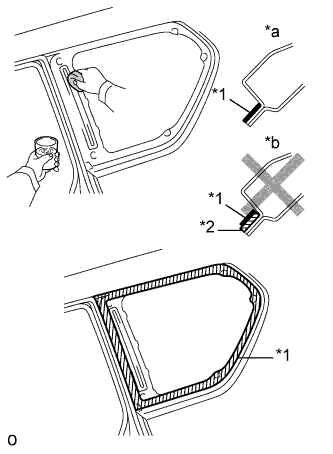
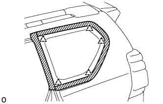
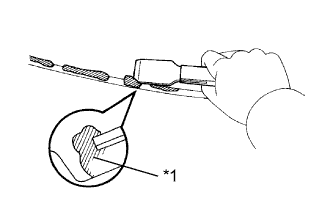
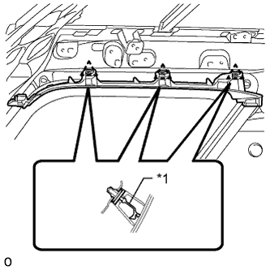

СТЕКЛО НЕОПУСКНОЕ (для 5-дверной модели) > УСТАНОВКА |
| 1. УСТАНОВИТЕ ЛЕВОЕ НЕОПУСКНОЕ СТЕКЛО В СБОРЕ |
|  |
С помощью кисти или губки нанесите грунтовку "M" на открытые поверхности кузова автомобиля.
| *1 | Грунтовка "M" |
| *2 | Фиксатор |
| *a | ПРАВИЛЬНО |
| *b | НЕПРАВИЛЬНО |
С помощью кисти или губки нанесите грунтовку "G" на поверхности соприкосновения стекла.
| *1 | Фиксатор | - | |
| *a | Задняя сторона | *b | Центральная линия герметика-фиксатора |
| Участок | Заданные условия |
| a | 7,0 мм (0,276 дюйма) |
| b | 8,0 мм (0,315 дюйма) |
| c | 6,5 мм (0,256 дюйма) |
Нанесите герметик на неопускное стекло.
Срежьте кончик наконечника баллона, как показано на рисунке.
| *1 | Фиксатор | - | |
| *a | Задняя сторона | *b | Центральная линия герметика-фиксатора |
| Участок | Заданные условия |
| a | 12,0 мм (0,472 дюйма) |
| b | 8,0 мм (0,315 дюйма) |
| c | 6,5 мм (0,256 дюйма) |
| Температура | Время использования |
| 35°C (95°F) | 15 мин |
| 20°C (68°F) | 1 час 40 минут |
| 5°C (41°F) | 8 часов |
Вставьте баллон в пистолет для нанесения герметика.
Нанесите герметик на неопускное стекло, как показано на рисунке.
Установите неопускное стекло на кузов автомобиля.
|  |
Введите в зацепление 4 фиксатора, чтобы установить левое неопускное стекло.
Надежно зафиксируйте неопускное стекло на месте с помощью защитной клейкой ленты или аналогичного средства до тех пор, пока фиксатор не затвердеет.
Слегка нажмите на переднюю поверхность стекла, чтобы убедиться в плотности посадки.
|  |
Удалите все выступающие излишки герметика скребком.
| Температура | Минимальный период времени до приведения автомобиля в движение |
| 35°C (95°F) | 1 час 30 минут |
| 20°C (68°F) | 5 часов |
| 5°C (41°F) | 24 часа |
| *1 | Фиксатор |
| 2. ПРОВЕРЬТЕ, НЕТ ЛИ ПРОТЕЧЕК; УСТРАНИТЕ ИХ, ЕСЛИ ОНИ ЕСТЬ |
Испытание на герметичность выполняйте после того, как герметик полностью затвердеет.
Нанесите на все выявленные места утечек герметизирующий состав для стекол автомобиля.
| 3. УСТАНОВИТЕ ОБЛИЦОВКУ ЛЕВОГО БОКОВОГО БРУСА КРЫШИ № 1 |
|  |
Установите новый фиксатор A на облицовку бокового бруса крыши.
| *1 | Новый зажим |
Введите в зацепление 3 фиксатора, чтобы закрепить облицовку бокового бруса крыши.
| 4. УСТАНОВИТЕ ОБИВКУ КРЫШИ В СБОРЕ |
Установите обивку крыши в сборе (Нажмите здесь).